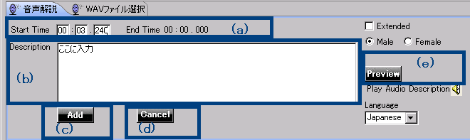
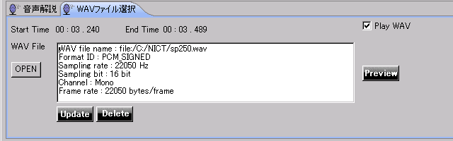
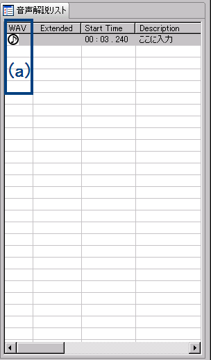
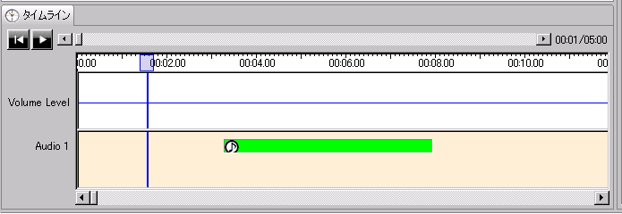

近頃のウェブ環境においては、Youtubeなど、動画のコンテンツが配置されている例が非常に多くなっております。 しかしながら、これらの動画に対して、音声ガイドが提供されていることはほとんどなく、視覚障害者にとってはアクセスが出来ない、見ても情報が取れないということが増えてきております。
動画に対する音声ガイドの付与率が非常に低い理由として、タイミングにあわせた音声ガイドの台本を作成するのが手間がかかり難しい、さらに 音声ガイドを録音するためのスタジオ等の設備に関して手間とコストがかかるという現状があります。
Script Editorは、入力したテキストを合成音声で読上げさせることにより、画像を見ながら 音声ガイドの編集を行うことを目的とするエディターです。 スピードや音声を変えながらリアルタイムに動画に音声ガイドを付与することが出来るので、何度も試すことができ、また 録音のための設備も必要ありませんので、手間とコストを抑えることが可能になります。
このセクションでは、基本的な動作について紹介いたします。
図1：Script Editor 全体図
Script Editorは、図１にありますように、４つのパネルに分かれています。 各パネルの説明は下記のとおりです。
動画に対する音声ガイドの付与の仕方の詳細を以下に説明します。
動画を見て、音声ガイドが必要な部分に対して見当をつけます。どういうときに音声ガイドをつけるかというのは、エディターの機能とは 直接関係はないので、ここでは詳細には触れません。

図２：パネル② ： 音声再生パネル
図２で、(a)のボタンで、動画の再生・停止を行うことが出来ます。
次に、再生した音声の波形が(b)のパネル部分に表示されます。音声ガイドは基本的には無音部分、無声部分に入れますので、この波形の 大小が参考になります。 タイミングを決めたら、音声ガイドを入力するためのパネルにフォーカスを移します。

図３：パネル③ ： 音声ガイド入力パネル（左部）
図３のパネル部分で、音声ガイドをテキスト入力することが出来ます。 (b)のパネル部分に、音声ガイドで読上げたい内容を入力します。開始の時間は(a)で確認できます。 この時間は、パネル②の(d)が示している時間です。 (c)と(d)のボタンは、未入力の状態では出てきません。文字が入力されるとボタンが自動的に表示されます。
(b)で入力した内容を合成音声で読上げて、確認することが出来ます。入力した後で(e)のボタンを押すと、正しく読んでいるかが確認できます。
音声合成が正しく発話していることが確認できたら、パネル③の(c)のAddのボタンを押すと、音声ガイドが付与されます。 付与される時間と長さは、パネル②の(c)のパネルで確認できます。 このパネルで、四角い緑色の領域の左端が該当の音声ガイドの開始位置、右端が終了位置を表しています。

図４：パネル④ ： 音声ガイドリストパネル
作成した音声ガイドは、図４にある音声ガイドのリストパネルに表示されます。開始時間と、音声ガイドに入力された内容が時系列順に追加されていきます。 リストで音声ガイドの間違いを見つけた場合、リスト部分をクリックしたら、入力パネル③に該当部分の音声ガイドが出てきます。 一度入力された音声ガイドが再度パネルに表示される場合は、図３の（ｃ）のボタンの代わりに、Updateと Deleteのボタンが表示されます。 ここで、修正を行い、Updateを押すと、修正された音声ガイドが再び図４のパネルに表示されます。
付与される音声ガイドを読上げる合成音声は、速度や音量など調整することが出来ます。 これら、合成音声のパラメーターの詳細設定については、各パネルの詳細説明をご覧ください。
別に作成しているwavファイルを指定することも出来ます。 特殊な音声合成エンジンなどで作った音声や、録音した肉声で音声ガイドを付与したいときなどに使います。
音声ガイドをつける手順としては、1-1までは同じです。1-1では、合成音声で読上げさせて確認していますが、 wavをつける場合は、つけたいwavファイルを選択して、音声を確認します。その流れを説明します。

図５：パネル③' ： wavファイル選択パネル
音声ガイドをつける位置が決まったらwavファイル選択のタブメニューを選んで図５のパネルを出します。 （図５は、図３のパネルでタブメニューになっているwavファイル選択というメニューを押下したら現れるパネルです。）
図５の(a)に示すOPENのボタンを押すと、ファイル選択のダイアログが出てきますので、ここで 該当の音声ガイドが入っているwavファイルを選択します。 OKを押したら、wavファイルの情報が入力フィールドに表示されます。内容が聞きたい場合は(c)の Previewボタンを押下してください。
選択したwavファイルで問題がなければ、(b)のUpdateボタンを押下します。するとこの情報が確定になり 音声ガイドリストに反映されます。

図６：wavが反映された音声ガイドのリスト
音声ガイドリストには、該当の部分の音声ガイドがwavであることが表示されます。図６の(a)の部分に 音符マークが表示されていたら、該当部分の音声ガイドはwavファイルのほうを優先して再生することが示されています。 同様に、図２の音声再生パネル部分の、音声ガイド表示部分（緑色の部分）にも、音符マークが表示されます。 （図７参照）

図７：wavが反映された音声ガイドのタイムライン表示
このようにして、音声ガイドをつけていき、つけて終わったら、保存を行います。 上部のメニューから、「ファイル」->「保存」を選択すると、上書き保存を行います。（新規で作成していた場合は、保存のためのファイル指定の ダイアログが現れます）。 同様にメニューから「ファイル」->「名前をつけて保存」、では別の名前で保存をすることが出来ます。 保存の形式はXML形式になっております。
このようにしてつけて行った音声ガイドはCVSでも保存することが可能です。 上部のメニューから、「ファイル」→「CVS入力」を選択すると、*.csvの形式で保存するためのダイアログが出てきますので、 適切な名前をつけて保存します。 また、既にCVSで作成されているファイルを読み込んで、確認することも可能です。 同様にメニューから、「ファイル」→「CVS出力」を選択すると、CVSファイルを読み込みます。 CVSがどのようなフォーマットが必要なのかは、 CVSのフォーマットについてをご参照ください。
その他のメニューについては、現在準備中です。